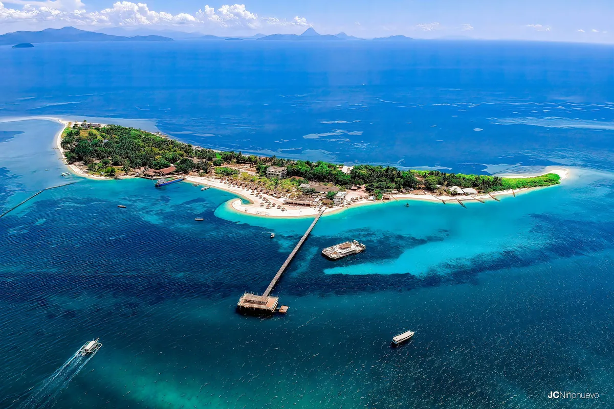

A few strands of my photography and editing practice: publication work, campus coverage and moving-image stories.

The La Salle Yearbook
Photo and Video Editor
My yearbook work includes event coverage, portraits and photo selection for publication. The work connects individual moments to the wider record of campus life.
My contribution
Coverage, portrait photography and selecting images for publication.
Explore related work →
Tigris Publication
Photo and Video Editor / Apertura Editor
My student-publication work centres on photojournalism, visual coverage and storytelling. The role brings together making photographs and editing a selection that supports a story.
My contribution
Photojournalism, coverage and visual editing for student media.
Explore related work →
Video and travel projects
Editor and Visual Storyteller
Short-form videos, travel edits and B-roll sequences are another part of my practice. I use Final Cut Pro to shape footage into a sequence with a clear pace and visual direction.
My contribution
Editing, sequencing and cinematic social-media cuts.
Explore related work →Photographs shown are selections from my portfolio. Project descriptions reflect the roles and work documented on this site.